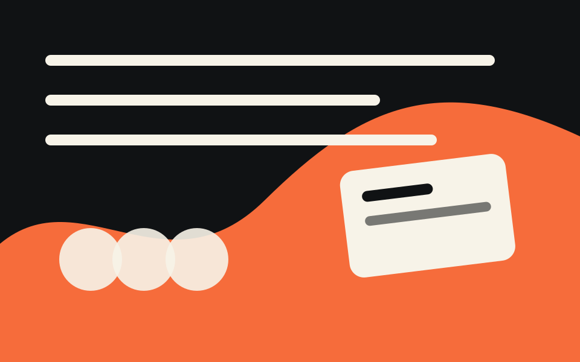

Phase 1
Pre-design
Shape the raw project signal into a practical brief: intake, content, brand, positioning, IA, and curation.

14 skills
Pre-design command list
Project Intake
/twt-project-intake
v1.0.1
Turn messy project notes and links into a clean site-instruction brief the pipeline can read.
Token usage
Mid
inputs yes · reads 5 · writes 3
View details
Pre Design
/twt-pre-design
v1.3.1
Run the full pre-design phase — content, brand, positioning, IA, curation — into one handoff brief.
Token usage
Very high
inputs yes · reads 16 · writes 1
View details
Spec
/twt-spec
v1.1.4
Interview into a north-star specification and validate it in one pass.
Token usage
High
inputs yes · reads 2 · writes 0
View details
Brand
/twt-brand
v1.2.2
Build and sanity-check your brand brief in one pass — fetch from a source if given, then define and validate.
Token usage
High
inputs yes · reads 3 · writes 0
View details
Brand Fetch
/twt-brand-fetch
v1.1.4
Pull existing brand signals from a brand book, Figma, screenshots, or a live site into raw notes.
Token usage
Mid
inputs yes · reads 6 · writes 2
View details
Positioning
/twt-positioning
v1.1.4
Define your positioning — audience, value props, priorities — and validate it in one pass.
Token usage
High
inputs yes · reads 2 · writes 0
View details
IA
/twt-ia-define
v1.1.1
Define the site structure — a sitemap with page purposes and CTAs, plus the functional scope.
Token usage
Mid
inputs yes · reads 6 · writes 3
View details
Content Fetch
/twt-content-fetch
v1.1.4
One entry point for content ingest — detects each source you provide and routes it to the right fetcher.
Token usage
High
inputs yes · reads 1 · writes 1
View details
Content Fetch Site
/twt-content-fetch-site
v1.2.2
Capture a website's pages as clean Markdown for audits, migrations, or reuse downstream.
Token usage
Mid
inputs yes · reads 1 · writes 3
View details
Content Fetch PDF
/twt-content-fetch-pdf
v1.0.0
Convert a PDF's readable text into clean Markdown for brand, IA, and curation work.
Token usage
Mid
inputs yes · reads 1 · writes 2
View details
Content Fetch Doc
/twt-content-fetch-doc
v1.0.0
Convert a Word or Google Doc into clean, uniform Markdown for the rest of the pipeline.
Token usage
Mid
inputs yes · reads 1 · writes 2
View details
Content Fetch Figma
/twt-content-fetch-figma
v1.0.1
Extract the visible text from a Figma design — headings, copy, labels, nav — as clean Markdown.
Token usage
Mid
inputs yes · reads 1 · writes 2
View details
Curation
/twt-curation-define
v1.2.1
Turn fetched content into a keep/skip/elevate plan plus a per-page outline of what fills each section.
Token usage
High
inputs yes · reads 8 · writes 4
View details
Text Analysis
/twt-text-analysis
v1.4.2
Audit copy by block type and suggest only rewrites that pass the safe-improvement gate.
Token usage
Mid
inputs yes · reads 3 · writes 3
View details